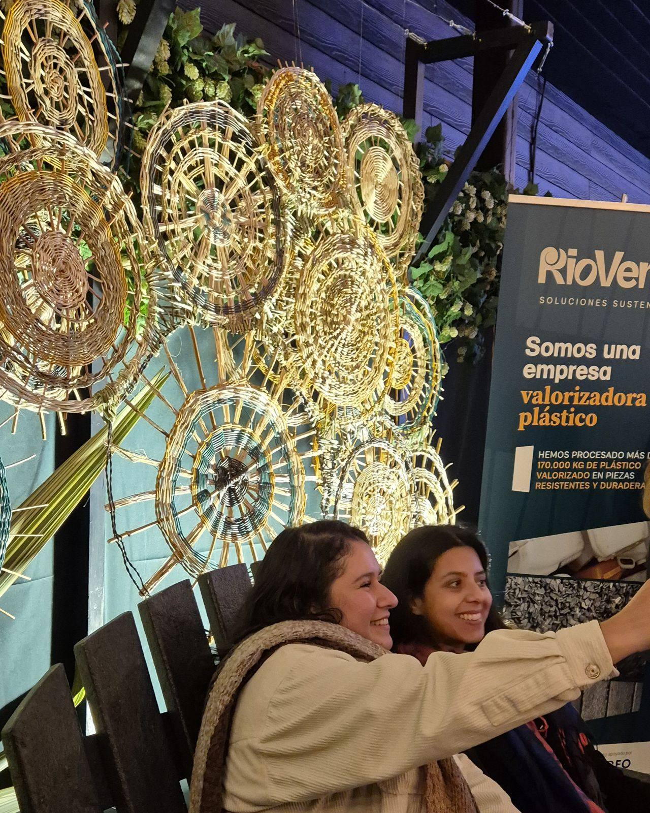
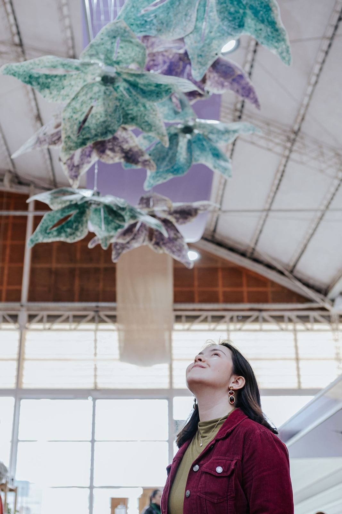
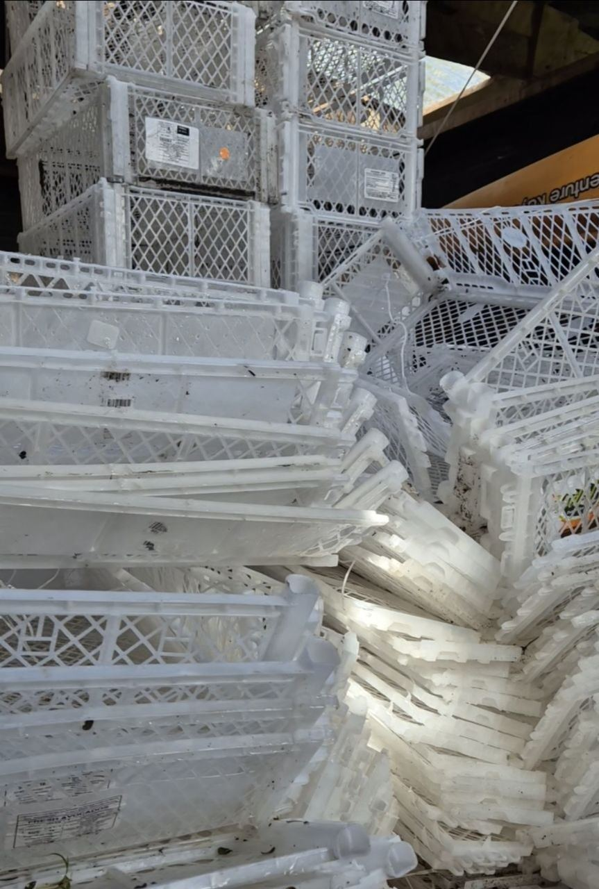
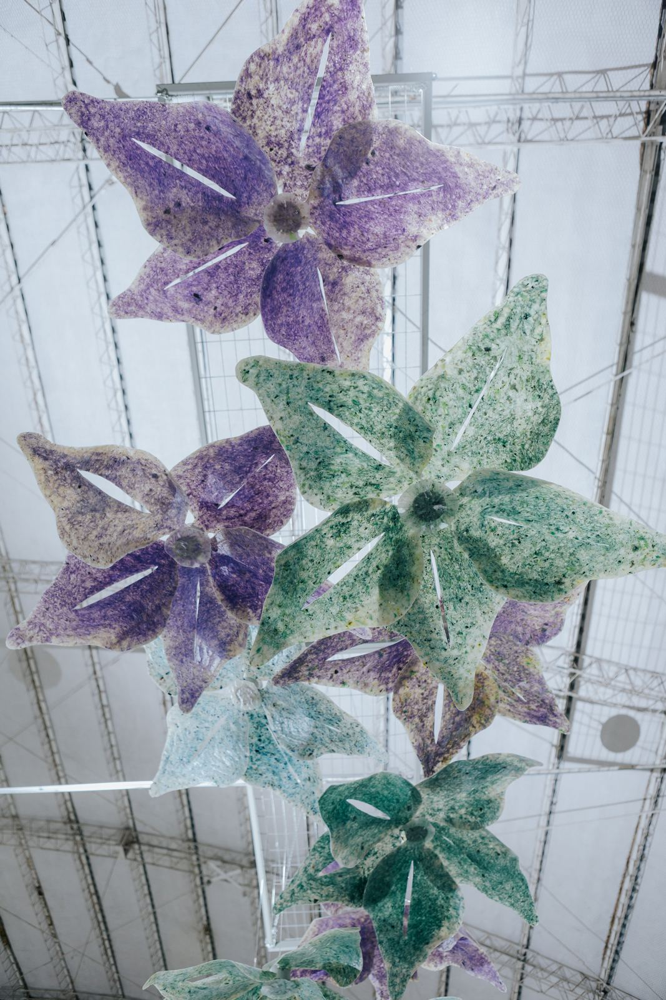
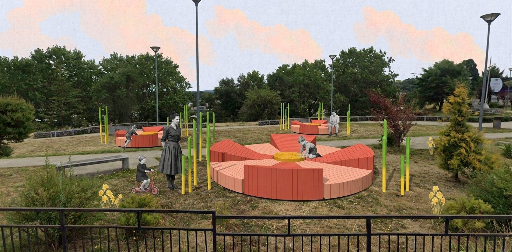
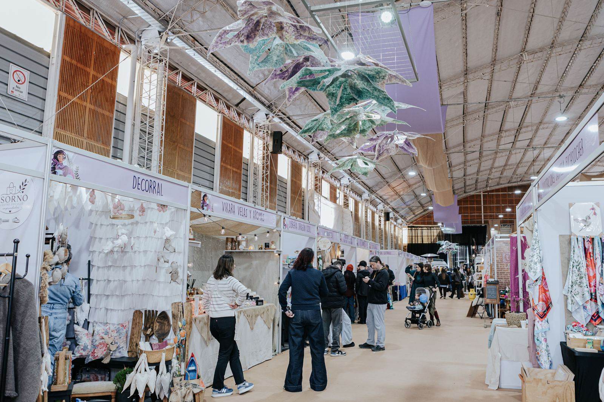
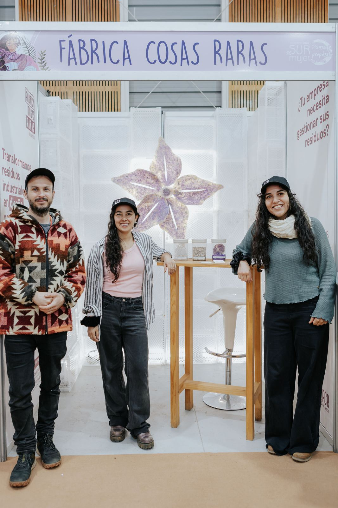

Experiencia de marca
Un lugar donde la gente se saca la foto con tu marca
Photo-opportunities, landmarks y piezas de marca para tu espacio, ingreso o evento. Cada foto que se comparte lleva tu marca y cuenta de dónde viene el material.
Instalaciones · Mobiliario · Landmarks
Diseñamos y fabricamos instalaciones, mobiliario y landmarks con el residuo de tu propia empresa. Ves la pieza en 3D antes de producirla y la recibes con certificado de disposición final para la Ley REP.


Lo que puedes reportar
Kilos que dejan de ir a relleno y quedan a la vista, en un dato que tu empresa puede reportar. Datos de FCR-001, Sur Mujer 2026.
01 · Qué puede ser tu residuo
Trabajamos con distintos materiales. Según lo que tu empresa necesita, el mismo residuo puede tomar tres caminos.

Experiencia de marca
Photo-opportunities, landmarks y piezas de marca para tu espacio, ingreso o evento. Cada foto que se comparte lleva tu marca y cuenta de dónde viene el material.

Evento
Instalaciones y escenografías para ferias, festivales, centros de eventos y oficinas. Se venden, o se arriendan por un periodo para partir.

Comunidad
Mobiliario, murales y objetos para plazas, escuelas y espacios públicos, diseñados y hechos para la comunidad de tu región.
Pensamos como estudio y producimos como fábrica.
El reciclaje devuelve el material a un ciclo industrial donde desaparece. Nosotras lo revalorizamos: el residuo vuelve a tu empresa convertido en una pieza única que se ve, se toca y cuenta su historia.
02 · Taller · Valdivia
Cada material se trabaja distinto, pero el proceso tiene siempre tres pasos. En el video, cómo lo hicimos en Sur Mujer 2026.
03 · Cómo funciona
Visitamos tu planta. Vemos tipo de material, volumen y frecuencia de la merma.
Te proponemos dos o tres piezas según tu objetivo: reputación, evento o comunidad.
La pieza en 3D, en su lugar y a escala, antes de fabricar.
Fabricamos en nuestro taller en Valdivia e instalamos.
Certificado de disposición final con gestor autorizado, para tu reporte de Ley REP.
Lo que te van a preguntar en tu empresa

Caso · FCR-001 · Encuentro Sur Mujer 2026
Cajas agrícolas en desuso convertidas en un techo de flores sobre los pasillos de la feria, en Valdivia. Producida y montada por un equipo de artistas, creativos y fabricantes del sur.
Bernardita Birkner
Directora Creativa · Sur Mujer
Alianzas
Empresas e instituciones que nos proporcionan material, nos apoyan desde lo institucional o buscan junto a nosotras nuevas formas de disminuir los residuos de la industria.
¿Tu empresa quiere sumarse?
Quiero ser parte de las alianzas04 · Formas de partir
Diseñamos una pieza propia con el residuo de tu empresa y te la entregamos con certificado.
Quiero conversarSi tu empresa o institución no genera residuos pero quiere una pieza con sentido ambiental, trabajamos con material recolectado por nosotras.
ConversemosVendemos o arrendamos instalaciones disponibles para eventos y ferias. Revisa la ficha técnica de FLOR PP5.
Ver ficha técnica (PDF)
05 · Quién se hace cargo
Desde 2021 diseñamos marcas y espacios para pymes e industrias del sur. En 2026 nace FCR, porque nuestros clientes necesitaban una salida para sus residuos.
Producimos en nuestro taller en Valdivia, con una red de artistas y oficios del sur.
Para partir la conversación, nos sirve saber:
